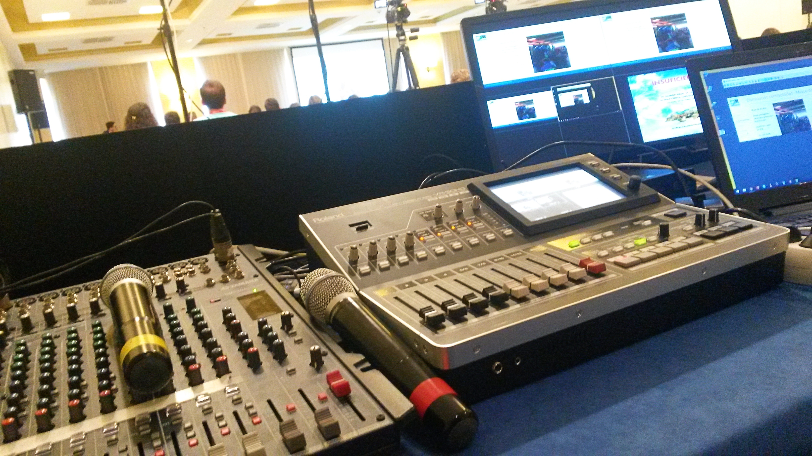

About me
TESTING! I am a highly motivated university graduate. Staying in the comfort zone is not my thing, so I enjoy challenging and pushing myself to the limits. I have a keen interest in new technologies and always look for ways to innovate my working practices. Along with Spain, I have worked and studied in both Ireland and the United States and I would love to continue building on my cultural development as I see this as an important soft skill for my future. In recent years I have built on my professional experiences, working on projects related to telecommunications and air traffic management. My vision is to build a strong bandwidth of professional experiences that will raise my competences from which I can draw on at more senior levels.
Education
UNIVERSITY DEGREE IN TELECOMMUNICATION SYSTEMS ENGINEERING
2014 - 2020
Universidad Rey Juan Carlos (Madrid, Spain)
UNIVERSITY DEGREE IN BUSINESS MANAGEMENT
2014 - 2020
Universidad Rey Juan Carlos (Madrid, Spain)
MASTER IN DECISION MAKING AND INNOVATION
2020 - 2020
Universidad de Alcalá, Madrid (Spain)
ADVANCED STUDIES IN HOSPITALITY MANAGEMENT
2019 - 2020
University of California Riverside (CA, USA)
Work Experience
JUNIOR BID MANAGER
Jan 2021 - Present
Indra Sistemas (Madrid, Spain)
- Management of International Air Traffic Control sector bids. Determine key requirements through bid analysis and evaluation, and formulate all necessary components and structural plans to create a "winning bid". Coordination and supervision of the different teams (PMO, System Engineering of the different products, legal experts, etc...) that take part in the proposals preparation.
IT CONSULTANT INTERNSHIP
Feb 2020 - Dec 2020
Red Eléctrica Infraestructuras de Telecomunicación (Madrid, Spain)
- Support in the development of new commercial products related to optical fiber, 5G and DWDM, customer management and projects monitoring.
BACKEND DEVELOPER
Feb 2020- Nov 2020
Kibotics
- Developing new functions for the API of a web application using JavaScript, TensorFlowjs, OpenCVjs, A-Frame, Blender, HTML, CSS and WebWorkers.
AUDIOVISUAL SYSTEMS TECHNICIAN
Jan 2016- Jan 2018
Audiovisuals Beamer S.L (Madrid, Spain)
- Audiovisual equipment installation and configuration in congresses and events. 
INTERNATIONAL COLLEGE PROGRAM
May 2019 - Jan 2020
Walt Disney World (Orlando FL, USA)
- Customer service, ticketing and IT systems control, cash handing, English-Spanish translation, audience flow monitoring.